著名网球运动员
诺瓦克·德约科维奇
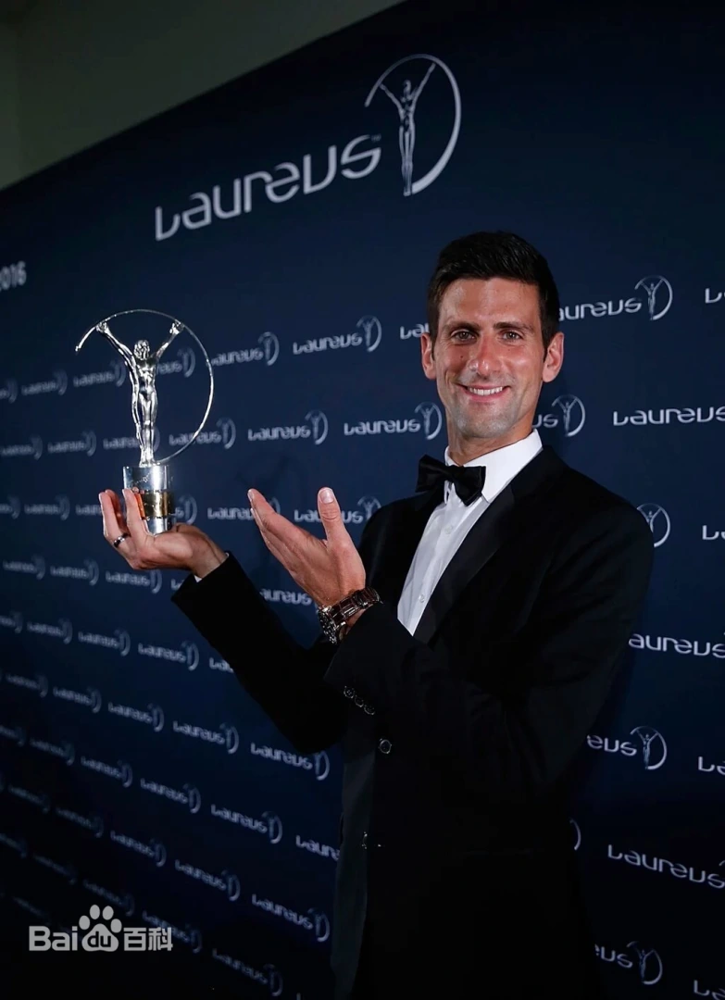塞尔维亚职业网球运动员，自2003年成为职业网球选手，赢得了20个大满贯单打冠军，包括9次澳网冠军、6次温网冠军、3次美网冠军和2次法网冠军。他曾占据世界第一的位置超过311周，超越了罗杰·费德勒此前所保持的310周的纪录。
罗杰·费德勒
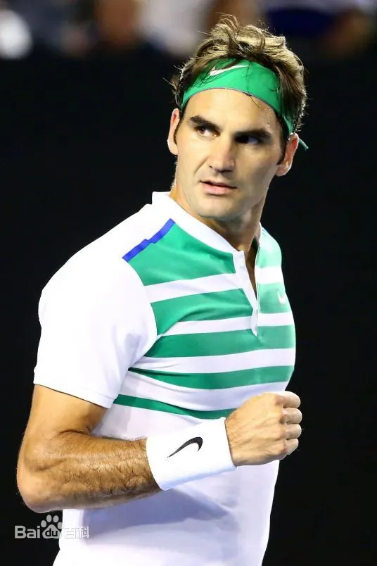瑞士职业网球运动员，被公认为史上最伟大球员之一，以全面稳定的技术、华丽积极的球风、绅士优雅的形象而著称。他获得了20个大满贯冠军（8次温网冠军、6次澳网冠军、5次美网冠军、1次法网冠军），曾310周获得世界第一。
拉菲尔·纳达尔
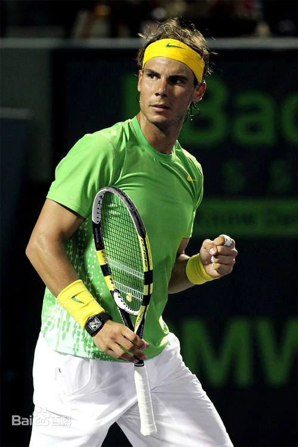西班牙职业网球运动员，被称为"红土之王"。他的职业生涯已经获得了22座大满贯冠军，其中14座法网冠军奖杯使他成为历史上首位在同一项大满贯赛事中获得十个冠军头衔的男选手。
安德烈·阿加西
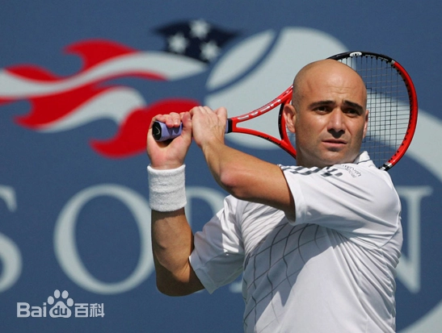前美国职业网球运动员，是男子网球历史上最伟大的选手之一。他共获得60个单打冠军头衔，其中包括8个大满贯冠军（4次澳网冠军、2次美网冠军、1次法网冠军、1次温网冠军）、1个奥运会男单冠军、1个年终总决赛冠军以及17个大师赛冠军。
皮特·桑普拉斯
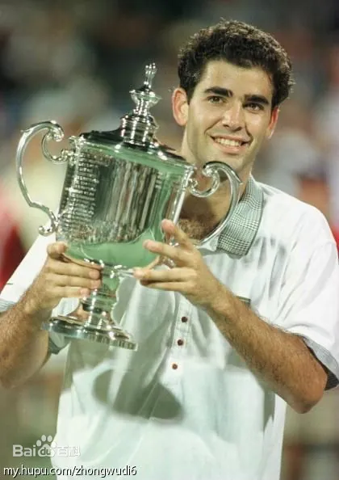前美国职业网球运动员，被认为是世界上最好的男子网球选手之一，赢得了14个大满贯单打冠军。
罗德·拉沃尔
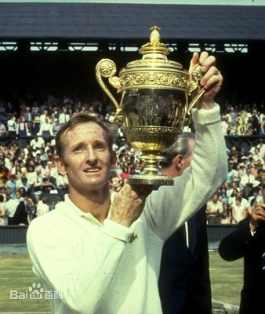澳大利亚前网球运动员，曾经占据世界第一宝座达连续七年之久，是网球历史上唯一一个两次在一年中拿到全满贯的球员。他在职业生涯赢得了200个冠军，11个大满贯（4次温网冠军、3次澳网冠军、2次美网冠军、2次法网冠军）。
比约·博格
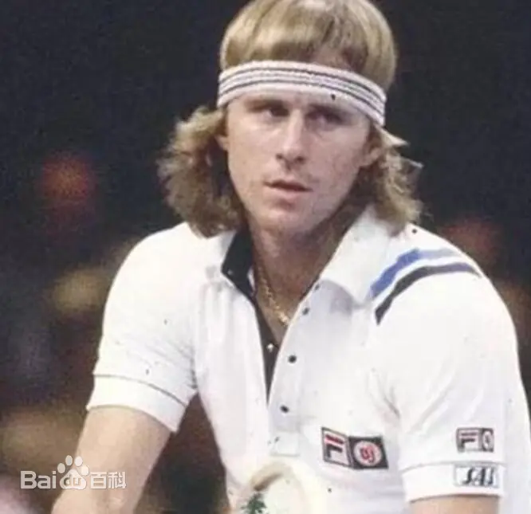前瑞典职业网球运动员，未满18岁时就在法网夺得了职业生涯的首个大满贯冠军头衔，在随后的职业生涯中，博格凭借温网五连冠，法网六封王，在两种截然不同的场地上证明了自己对绿色小球的天赋，被誉为最伟大的球员之一。
施特菲·格拉芙
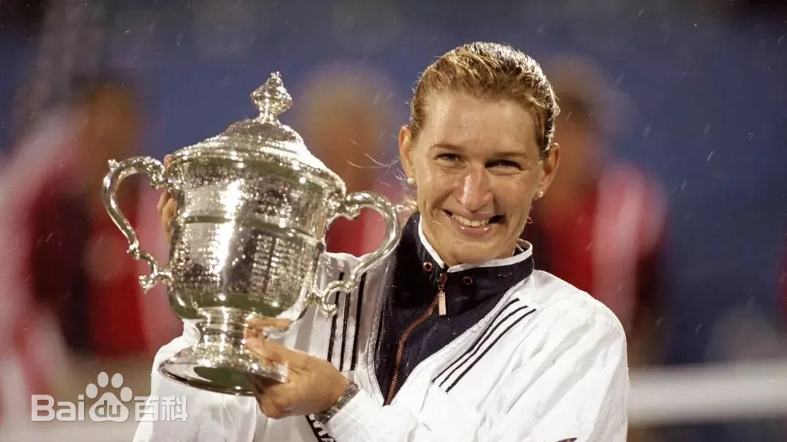德国职业女子网球运动员，职业生涯累计拿到22座大满贯单打奖杯，同时也是网球史上至今唯一的年度金满贯得主。共夺得了107次WTA赛事的冠军，保持世界排名第一的总时间达到377周。
海伦·威尔斯·穆迪
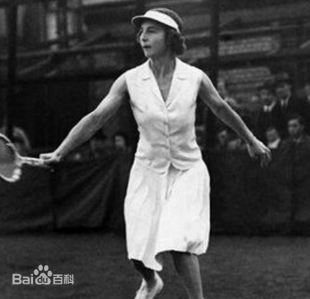美国著名女子网球运动员，总共参加过92项赛事，赢得了其中的52项冠军，曾经19次夺得网球大满贯冠军，其中包括创纪录的夺得8次温布顿网球锦标赛女单冠军。
玛蒂娜·纳芙拉蒂洛娃
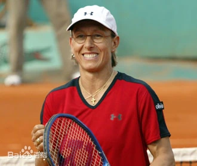前捷克斯洛伐克、美国女子网球运动员，职业生涯总共获得18个单打大满贯，31个女双大满贯和10个混双大满贯。1982年到1987年，她前无古人地连续6次夺得温网单打冠军，生涯温网夺冠更是达到9次。
克里斯·埃弗特
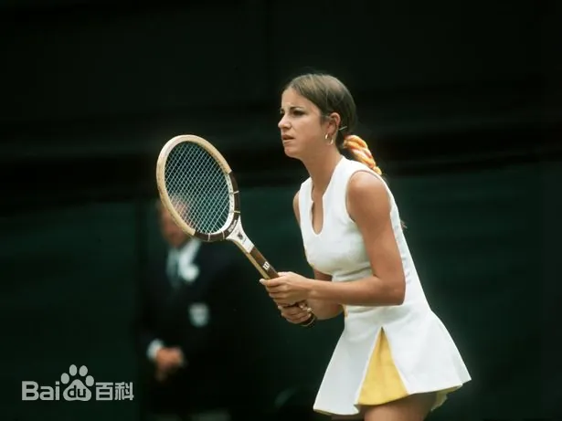美国著名女子网球运动员，曾经18次夺得网球大满贯女子单打冠军，其中包括创纪录的7次法国网球公开赛女单冠军。
约翰·麦肯罗
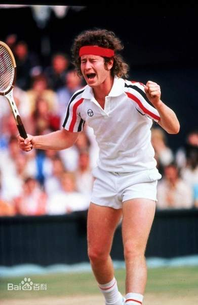他是一名网球评论员和分析师，曾是一代最好的球员之一。职业生涯中获得了77个单打冠军和78个双打冠军，并保持着网球历史上最多组合冠军的记录。他有7个大满贯冠军头衔——4个美网冠军和3个温网冠军。
吉米·康纳斯
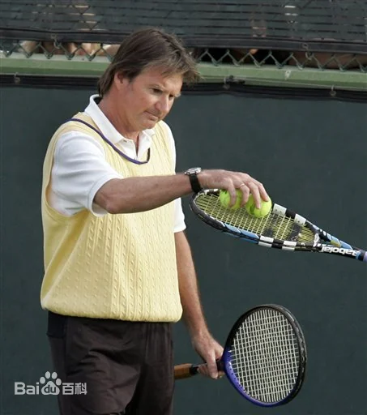70年代统治网球界，曾是世界第一。他连续160周成为世界第，这是1974年至1977年的记录，268周是世界第一。他在职业生涯中赢得了8个大满贯冠军，其中包括澳网冠军、2个温网冠军和创纪录的5个美网冠军。
伊万·伦德尔
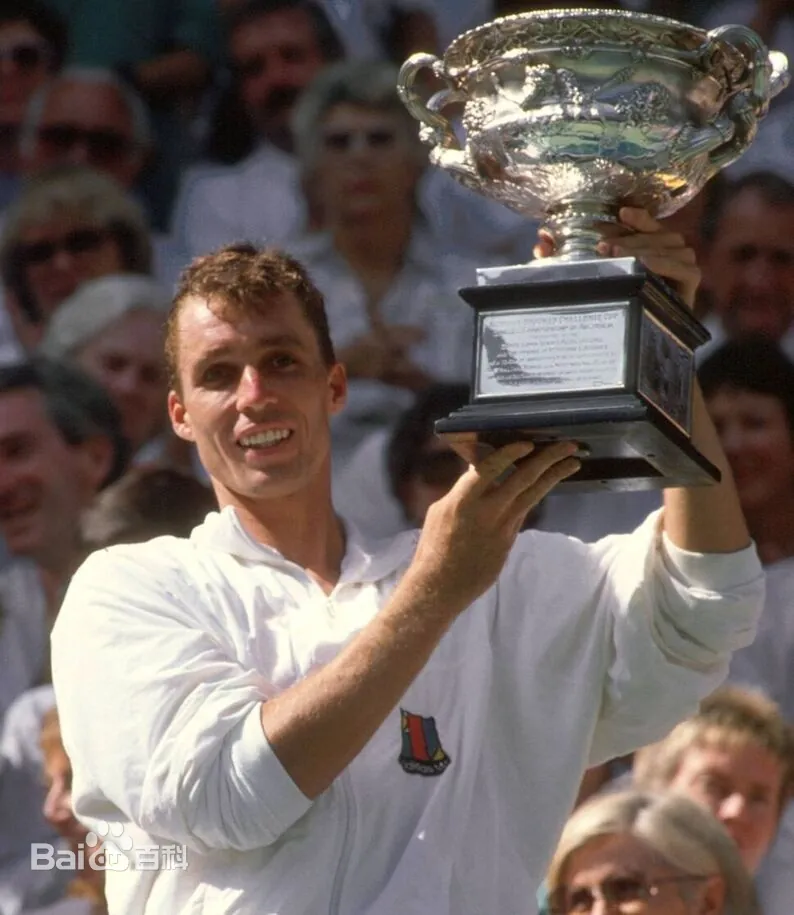未提供详细信息，但伊万·伦德尔是捷克斯洛伐克前职业网球运动员，曾是世界排名第一的选手，赢得了多个大满贯赛事。
弗雷德·佩里
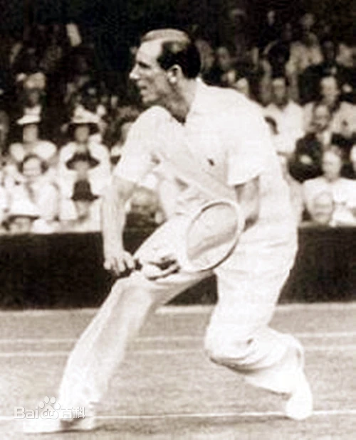英国著名乒乓球和网球运动员。他是英国首位获得世界冠军的乒乓球运动员，也是英格兰和网坛历史上第一个实现全满贯的球员。在他的网球职业生涯中，共夺得8座大满贯男单冠军，2个大满贯男双冠军和4个大满贯混双冠军，长达4年时间占据世界第一的宝座，并于1975年被收录入国际网球名人堂。
唐纳德·布吉
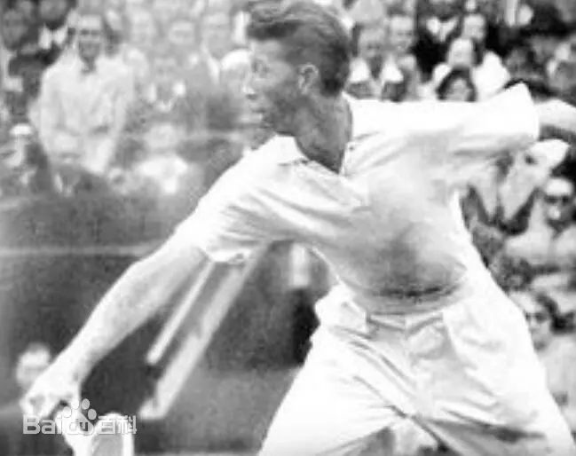美国前网球运动员。他于1932年加入网球业余巡回赛，1938年转为职业，1955年退役经商，1964年入选世界网球名人堂。在他的网球职业生涯中，共夺得6座大满贯男单冠军（3次美网冠军、1次温网冠军、1次澳网冠军、1次法网冠军），2个大满贯男双冠军和2个大满贯混双冠军。
罗伊·爱默生
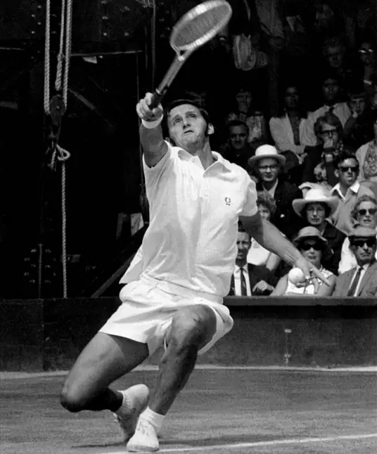未提供详细信息，但罗伊·爱默生是澳大利亚前职业网球运动员，曾是世界排名第一的选手，赢得了多个大满贯赛事。